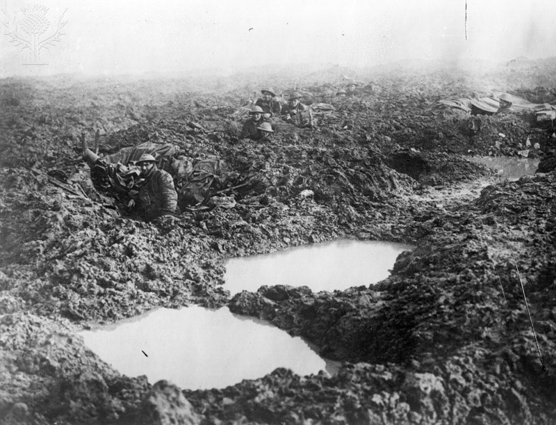

Passchendaele Memorial — A Poem
This poem will be placed on a plaque in the War Museum. It is about the soldiers who fought in the Battle of Passchendaele and the harshness that they braved. Despite the overall futility of the battle, the people who braved the mud and tried their lives are to be regarded as noble heroes. The memorial specifically focuses on each soldier’s humanity and how they are “grounded” and carried on by those whom they love. In this way, the battle itself is not painted as particularly honourable or good, but the soldiers absolutely are.
In Mud We Are Grounded
In this barren place
this quagmire of hell
We stand, slip and fall
and some bid farewell
No moment of silence
no sound place to rest
For all men are forceful
while the sky so detests
On this foreign ground
so rife with our pits
We stand, slip and fall
as one of us quits
What’s so hard to think
yet harder to stare
Is what used to be
what now is so bare
In mud we are grounded
well grounded in wet
In those that we love
against all that besets
In mud we are grounded
the ground holds our lives
Wet, grimy, and slippery
yet through we survive
Where all men are forceful
and the sky so detests
Through mud we are grounded
as God can attest.
I chose this form of memorial because I feel that literary works can do such topics as this good justice. I also chose it because I’m not artistic and there’s no way I’d be able to make a statue or monument that would do it justice in any way, and a piece of money didn’t seem too appropriate.
I see in Canada’s future that nothing quite like this happens again; in particular, that one sole person’s pride and power leads to so much pointless waste. The weather was obviously no one’s fault and really rather unavoidable, but the mass loss of life for practically zero gain absolutely was.
There is already a Passchendaele memorial right on-site in the village of Passchendaele. This is a large, outdoor, physical memorial with inscribed stone. My memorial is a bit of a smaller one designed for museums, but intended to be in the same ballpark message-wise.